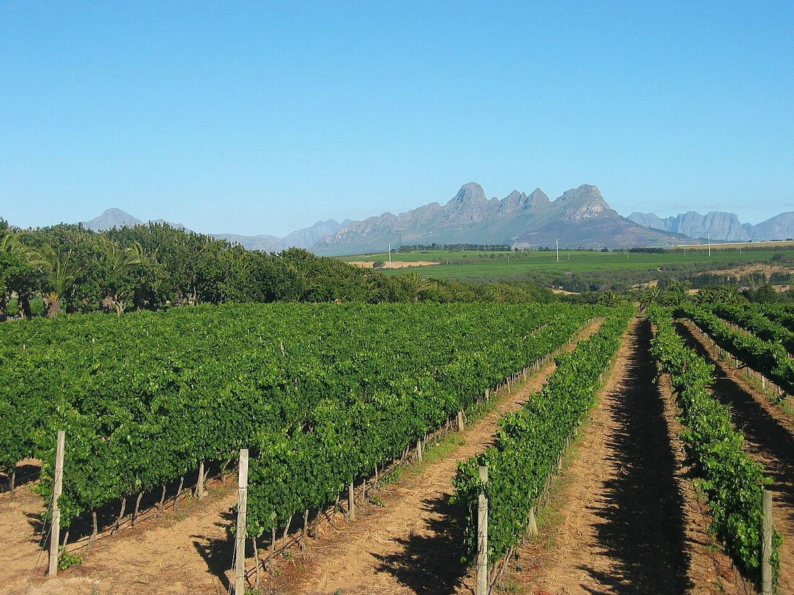

RED
Home › South Africa › Stellenbosch
Wine of Origin (WO)Stellenbosch
Stellenbosch, east of Cape Town, is South Africa’s best-known wine district and the centre of its wine education and research. It stands out for Cabernet Sauvignon, Bordeaux blends, Pinotage and Chenin Blanc.

History
The town of Stellenbosch was founded in 1679 by Governor Simon van der Stel, who gave it its name, and is the second-oldest European settlement in South Africa after Cape Town. Its oak-lined streets and Cape Dutch houses recall that colonial past. From very early on, settlers planted vines in the surrounding valleys, and many of today’s estates still have buildings dating from the eighteenth and nineteenth centuries.
Stellenbosch University and the nearby Elsenburg institute have trained generations of viticulturists and winemakers, and it was at the university that Professor Abraham Izak Perold created Pinotage in 1925. In 1971 the country’s first wine route was opened here, helping to make the area one of South Africa’s most visited wine tourism destinations. Today the district is home to many of the country’s most highly regarded estates, from historic family properties to modern wineries.
Climate and soils
The climate is Mediterranean, with rainy winters and warm, dry summers. The proximity of False Bay, to the south, brings cool afternoon breezes, and the south-easterly wind helps keep the grapes healthy. The mountains surrounding the district, such as the Simonsberg, the Helderberg and the Stellenbosch and Jonkershoek ranges, create a great diversity of altitudes and aspects. On the slopes, deep soils of decomposed granite with good water retention predominate; in the lower areas and towards the west, sandstones and shales are common. The district is divided into several wards, among them Simonsberg-Stellenbosch, Jonkershoek Valley, Banghoek, Bottelary, Devon Valley, Papegaaiberg, Polkadraai Hills and Vlottenburg.
Styles
Cabernet Sauvignon is the most prestigious red variety and gives structured wines with black fruit, cedar and herbal notes and firm tannins, often with good ageing potential. Bordeaux-style blends with Merlot and Cabernet Franc are a speciality of many estates. Pinotage finds some of its best expressions here, especially from bush vines, and blends known as Cape blends combine it with Bordeaux varieties. Among the whites, Chenin Blanc, sometimes from old vines, Chardonnay and Sauvignon Blanc stand out. Syrah completes a very broad range. Many estates produce wines labelled “Estate Wine”, made exclusively from grapes grown in their own vineyards, and the diversity of slopes makes it possible to compare the same variety from different wards.
Wines · Stellenbosch
RED
Kanonkop Paul Sauer
See profile & where to buy ↗RED
Kanonkop Pinotage
See profile & where to buy ↗WHITE
Kleine Zalze Family Reserve Chenin Blanc
See profile & where to buy ↗WHITE
Meerlust Chardonnay
See profile & where to buy ↗RED
Meerlust Rubicon
See profile & where to buy ↗RED